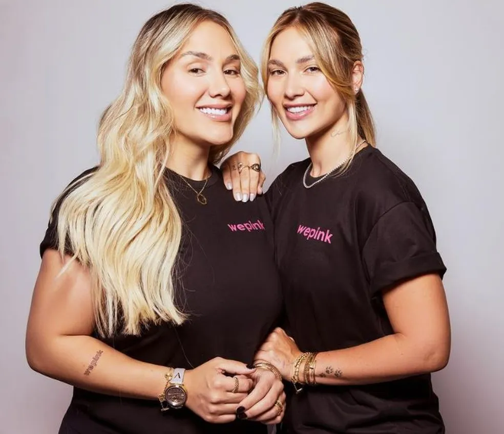
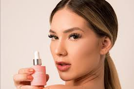
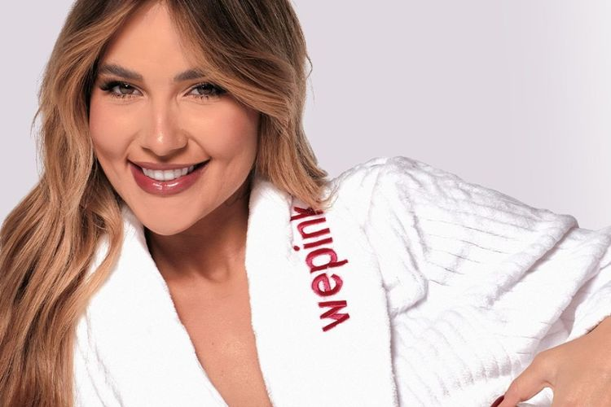
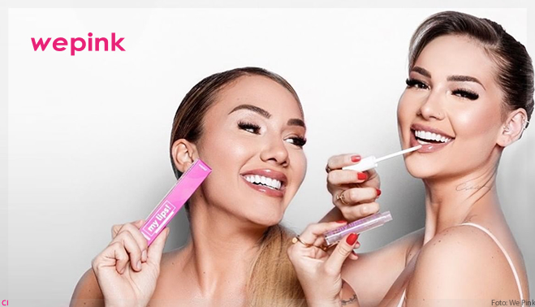
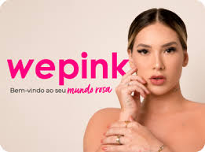
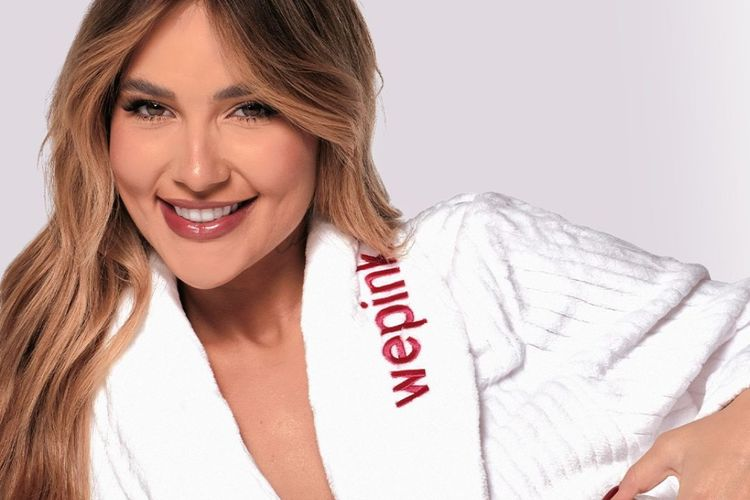
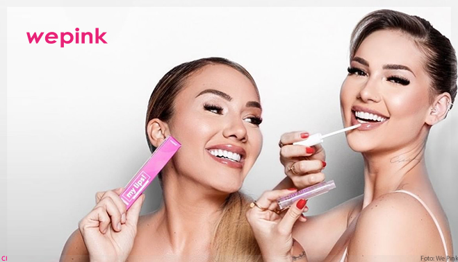
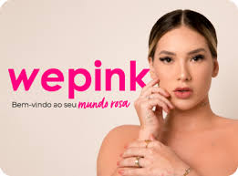

A marca de cosméticos WePink foi fundada em 2020 pela influenciadora Virgínia Fonseca e a empresária Samara Pink.
A ideia da marca surgiu após a influenciadora ter problemas com acne durante a gestação da sua primeira filha, Maria Alice.
Virgínia resolveu se juntar a Samara Pink, que já atuava no mercado estético. O faturamento no primeiro mês de vida da WePink, segundo Virgínia, foi de R$ 10 milhões.
O primeiro produto da marca foi um “sérum 10 em 1”, que prometia desempenhar funções diversas concentradas em um único produto. Menos de três anos depois,
o site tem disponíveis dezenas de itens, entre eles produtos de skincare e perfumes.


 




